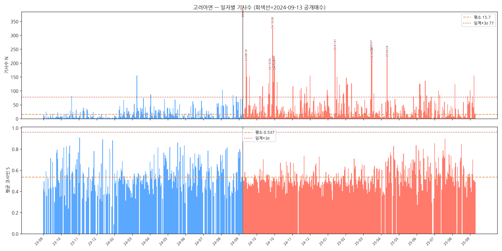
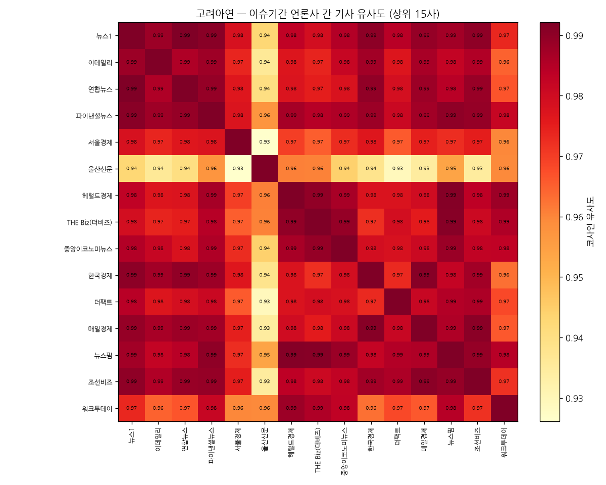
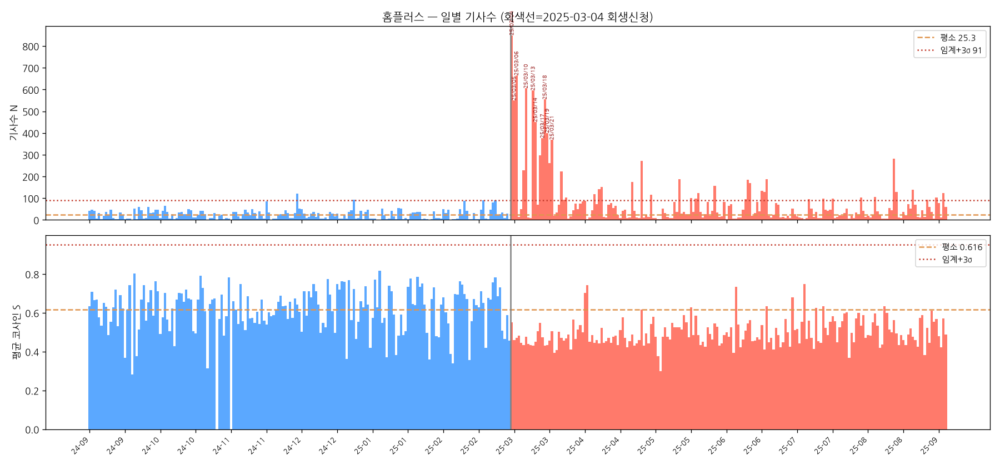
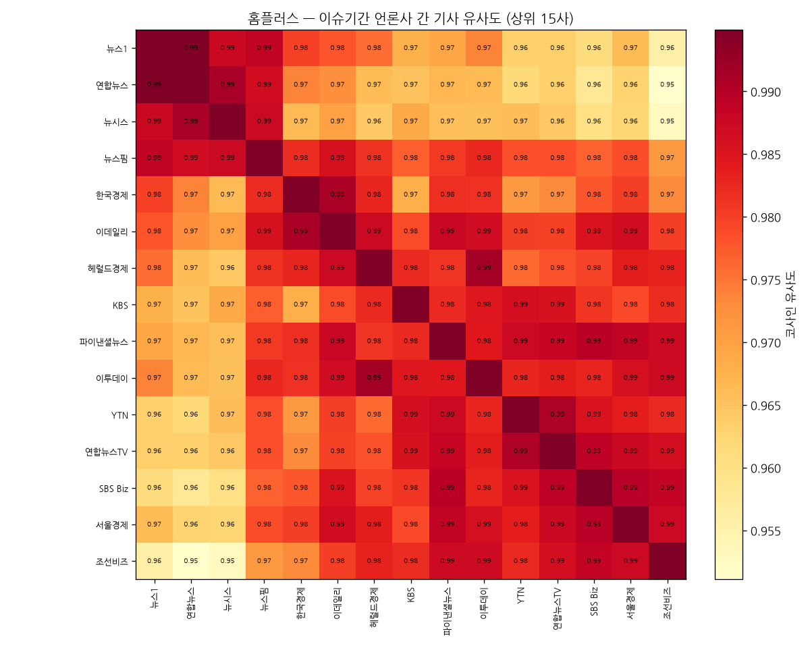

한국어 포털뉴스 매체 간 보도 동기화 패턴의 정량 검정
— 기사 수 급증과 의미 유사도로 본 churnalism
ABSTRACT
본 연구는 한국어 포털뉴스에서 하나의 사건이 다수 매체의 유사 기사를 동시에 양산하는 현상(churnalism)을 정량적으로 검정한다. 네이버 뉴스에서 고려아연과 홈플러스 두 사건의 기사를 일자별로 전수 수집하고, 제목을 의미 임베딩으로 변환하여 일별 기사 수(N)와 기사 간 평균 코사인 유사도(S)를 측정하였다. 사건 발생일을 기준으로 사전·사후를 나누어 N은 음이항 회귀로, S는 순열검정과 무작위배정 영모형(z)으로 검정하였다. 두 사례 모두 사후 기사 수가 평소의 2.7~3.0배로 유의하게 증가하였고(p<0.001), 기사 수가 임계를 넘은 시점은 사건의 중대 국면과 정확히 일치하였다. 다만 의미 동질성은 고려아연에서 상승한 반면(z 3.54→4.59), 홈플러스에서는 하락하여(z 12.25→6.81) 사건 구조에 따라 방향이 갈렸다. 본 연구는 사건이 만드는 자연 동기성의 정량적 기준선을 제시하며, 인위적 보도 동기화 탐지의 비교 baseline으로 기능한다.
1. 서론: 연구의 배경과 중요성
한국의 뉴스 이용 환경은 세계적으로 유례를 찾기 어려운 포털 집중 구조를 보인다. 한국언론진흥재단(2023)에 따르면 디지털 뉴스 이용자의 약 63%가 포털 검색으로 뉴스를 접한다. 반면 언론사 사이트를 직접 방문하는 비율은 6%에 불과하다. 네이버 한 곳의 포털뉴스 점유율은 92.1%에 달한다. 사실상 단일 플랫폼이 한국어 뉴스 유통의 전 과정을 매개하는 셈이다.
이 구조에서 네이버에 제휴된 수백 개 매체는 동일한 이용자 풀을 두고 경쟁한다. 그 결과 매체 간 보도의 유사성은 한국 뉴스 생태계의 구조적 특성을 규정하는 핵심 변수가 된다. 동일한 검색 화면에 노출되므로 공간적 조건이 단일하게 통제된다. 매체명·발행 시각·URL 등 메타데이터도 표준화되어 대규모 정량 분석이 용이하다. 이용자 소비가 한 플랫폼에 집중되어 비교의 외생 변수도 제한된다.
그럼에도 한국어 환경의 매체 간 보도 동기화에 관한 정량 분석은 충분히 축적되지 않았다. 영문 환경에서는 매체 간 의제 설정과 임베딩 기반 의미 분석이 활발히 누적되어 왔다. 최근에는 글로벌 뉴스 동기성을 임베딩으로 측정한 대규모 연구도 제시되었다(Chen et al., 2024). 반면 한국어 연구는 키워드 빈도·토픽 모델링·네트워크 분석에 집중되어 있다. 의미 임베딩을 활용한 매체 단위의 대규모 비교 분석은 여전히 드물다.
매체 간 보도 동기화의 측정은 학술적 관심을 넘어 사회적 시의성을 갖는다. 2026년 2월 신설된 네이버 「뉴스 제휴 심사 및 운영 평가 규정」이 그 배경이다. 이 규정은 자기 복제·중복 부당 전송·카테고리 위반의 세 가지 정량 척도를 도입하였다. 특히 중복 부당 전송은 두 기사의 문장 유사도가 90% 이상인 비율을 측정한다. 그러나 이런 척도가 실제로 어떤 분포를 보이는지에 대한 학술적 기준선은 아직 정립되지 않았다.
인위적 동기화를 탐지하려면 사건이 만드는 자연스러운 보도 응집부터 정량화해야 한다. 하나의 큰 사건은 그 자체로 다수 매체의 동시 보도를 유발하기 때문이다. 이때의 기사 수 급증과 의미 동질성은 인위적 조작이 아닌 자연 현상이다. 따라서 이 자연 동기성의 baseline이 비교의 출발점으로 먼저 측정되어야 한다. 본 연구는 바로 이 자연 동기성의 정량적 기준선을 제시하는 데 목적을 둔다.
2. 선행연구와 한계
본 연구는 ① 의미 임베딩 기반 뉴스 분석, ② 한국어 뉴스 텍스트 마이닝, ③ 포털뉴스 어뷰징·중복 보도 연구의 세 흐름이 교차하는 지점에 위치한다.
2.1 의미 임베딩 기반 뉴스 텍스트 분석
뉴스 텍스트의 의미 유사성 측정은 사전학습 언어모델의 등장으로 새로운 단계에 진입하였다. Devlin et al.(2019)의 BERT는 문맥 의존적 단어 표현으로 NLP의 표준이 되었다. Reimers와 Gurevych(2019)는 Sentence-BERT로 문장 수준 유사도 측정의 효율적 표준을 마련하였다. Gao et al.(2021)은 대조 학습 기반 SimCSE로 문장 임베딩의 표현력을 끌어올렸다. 한국어에서도 KoSBERT·KoSimCSE 등 사전학습 모델이 공개되어 활용되고 있다.
뉴스 도메인에 임베딩을 적용한 연구는 다국어 환경에서 활발히 진행되었다. Miranda et al.(2018)은 다국어 임베딩과 온라인 군집화를 결합한 뉴스 클러스터링을 제시하였다. Saravanakumar et al.(2021)은 개체 인식 BERT를 활용한 비모수적 뉴스 군집화를 제안하였다. Hanley와 Durumeric(2025)은 다국어 Matryoshka 임베딩으로 글로벌 뉴스의 계층 구조를 분석하였다. 특히 Chen et al.(2024)은 팬데믹 초기 6천만 건의 뉴스로 국가 간 동기성을 측정하였다.
2.2 한국어 뉴스 텍스트 마이닝과 매체 비교
한국어 뉴스 텍스트 마이닝은 토픽 모델링과 네트워크 분석을 중심으로 발전해 왔다. 진설아 외(2013)는 동시출현단어분석으로 트위터 토픽 변화를 시계열로 추적하였다. 이제욱과 김현정(2022)은 토픽 모델링과 소셜네트워크 분석을 결합하였다. 정안용 외(2022)는 6,131건의 헤드라인으로 스마트도시 보도의 시기별 변화를 추적하였다. 김병욱 외(2025)는 LLM 요약 기반 표현이 군집화 성능을 높임을 검증하였다.
언론사별 보도 차이를 다루는 프레임 분석도 꾸준히 축적되어 왔다. 최정균 외(2017)는 "세월호" 보도를 텍스트 마이닝으로 분석하여 언론사 성향별 차이를 드러내었다. 유재광·오경수(2012)와 이서현·최진봉(2016)은 미디어법·사학비리 등에서 매체 프레임 차이를 비교하였다. 그러나 이들 연구는 대체로 3~6개 주요 일간지에 한정된다. 한국 포털뉴스의 매체 다양성 전반을 포괄하지는 못한다는 한계가 있다.
2.3 포털뉴스 어뷰징·중복 보도 연구
매체 간 보도 동질화는 영문 전통에서 매체 간 의제 설정으로 폭넓게 다루어져 왔다(McCombs & Shaw, 1972). 후속 연구는 한 매체의 의제가 다른 매체로 확산되는 과정을 분석하였다(Gilbert et al., 1980; Vargo et al., 2018). 한국에서는 이 동질화가 포털뉴스 어뷰징 연구로 발전하였다. 조영신 외(2015)는 매체 지위가 어뷰징 빈도에 미치는 영향을 실증하였다. 함민정·이상우(2018)는 실시간 검색어 기반 어뷰징을 사례로 분석하였다.
그러나 기존 어뷰징 연구는 대체로 단일 사례와 정성적 관찰에 의존한다. 의미 임베딩 기반의 매체 단위·대규모 측정과는 거리가 있다는 한계가 분명하다. 또한 사건이 만드는 자연스러운 보도 응집과 인위적 조작을 구분할 기준선이 없다. 자연 동기성의 정량적 baseline 없이는 조작 신호를 분리해 낼 수 없다. 본 연구는 이 공백을 메우기 위해 사건 전후의 통계적 검정 틀을 제시한다.
3. 연구가설
선행연구의 공백 위에서 본 연구는 검정 가능한 다섯 가지 가설을 설정한다. 핵심은 "사건이 기사 수와 의미 동질성을 평소와 유의하게 다르게 만드는가"이다. 종래의 서술적 관찰을 통계적 가설 검정으로 전환하는 것이 본 연구의 차별점이다. 각 가설은 명시적 귀무가설과 단측 대립가설로 조작화된다. 두 사례에 동일한 틀을 적용하여 사건 구조에 따른 차이도 함께 본다.
H1 (기사 수). 사건 발생 이후 일별 기사 수는 평소(사전)보다 유의하게 증가한다.
H2 (의미 동질성). 사건 이후 기사들은 같은 수의 무작위 기사보다 더 닮으며, 그 초과 동질성이 사후에 유의하게 커진다.
H3 (임계–이슈 일치). 기사 수가 평소+3σ 임계를 넘는 시점은 사건의 중대 국면(발표·결과·소송)과 시간적으로 일치한다.
H4 (매체 간 동조). 이슈 기간 주요 매체의 보도는 매체 간 의미 유사도가 매우 높아 수렴하며, 지역·전문 매체는 상대적으로 이탈한다.
H5 (사례 비교). 단일 핵심사건형(고려아연)과 다단계 진행형(홈플러스)에서 동기성의 시간적 양상이 다르게 나타난다.
4. 연구방법론
분석은 수집 → 필터 → 임베딩 → 일별 N·S 측정 → 통계 검정 → 임계·이슈 매칭 → 매체 간 유사도의 일곱 단계로 구성된다. 전 과정은 사건만 교체하면 그대로 재적용되는 단일 파이프라인으로 구현되었다.
4.1 데이터 수집
네이버 뉴스 검색의 일자별 전수 수집으로 분석 데이터를 구성하였다. 검색 결과 페이지의 무한 스크롤은 내부적으로 커서 기반 more-API를 호출한다. 본 연구는 이 커서 API를 따라가며 하루치 기사를 빠짐없이 수집하였다. 단순 페이지 파라미터 방식은 하루 약 120건에서 잘려 과소 수집되기 때문이다. 실제로 고려아연 공개매수일의 경우 단순 방식의 약 3배인 410건이 수집되었다.
4.2 관련성 필터
수집된 기사 중 해당 사건과 무관한 기사를 제목 기준으로 제거하였다. 제목에 사건 핵심어가 포함된 기사만 분석 대상으로 인정하였다. 고려아연은 "고려아연·영풍", 홈플러스는 "홈플러스·MBK"를 포함어로 사용하였다. 봉사·날씨·운세 등 명백한 비관련 키워드는 제외 목록으로 걸렀다. 정밀도를 우선하므로 제목에 사건명이 없는 일부 관련 기사는 누락될 수 있다.
4.3 의미 임베딩
각 기사의 제목을 OpenAI text-embedding-3-large로 3,072차원 벡터로 변환하였다. 모든 벡터는 코사인 계산에 앞서 L2 정규화하여 단위벡터로 만들었다. 제목은 기사의 핵심 프레임을 압축적으로 담아 매체 간 동조를 민감하게 포착한다. 본문 임베딩은 토큰 비용과 추출 품질 편차가 커 후속 과제로 남긴다. 동일 모델을 두 사례에 일관되게 적용하여 사례 간 비교 가능성을 확보하였다.
4.4 일별 기사 수(N)와 평균 유사도(S)
일별로 기사 수 N과 기사 간 평균 코사인 유사도 S를 산출하였다. S는 그날 모든 기사 쌍의 코사인 평균으로 정의된다. 단위벡터에서는 평균벡터 m의 노름으로 S를 빠르게 계산할 수 있다. 구체적으로 S = (n·‖m‖² − 1) / (n − 1)의 닫힌 형식을 사용한다. 이는 모든 쌍을 직접 계산한 결과와 정확히 같으면서 연산을 크게 줄인다.
4.5 통계 검정
사건 발생일을 기준으로 사전·사후를 나누어 N과 S를 각각 검정하였다. 검정 방법론은 news-pushing-book의 churnalism 검정 절차를 따른다. 기사 수 N은 과대산포를 고려하여 음이항 회귀로 모형화한다. 모형은 log(μ) = β₀ + β₁·post + 요일더미로, β₁>0의 단측 검정이 핵심이다. exp(β₁)은 사후 기사 수가 평소의 몇 배인지를 직접 나타낸다.
의미 유사도 S는 두 단계로 검정하여 기사 수 효과를 분리한다. 먼저 사전·사후 라벨을 뒤섞는 순열검정으로 원자료 S의 차이를 검정한다. 다음으로 무작위배정 영모형으로 기사 수 효과를 제거한 z를 구한다. 같은 수의 무작위 기사 집단에서 기대되는 S의 평균과 표준편차로 z를 정의한다. z = (S − μ_rand) / σ_rand가 사후에 더 커지는지를 Mann–Whitney 검정으로 본다.
두 지표가 함께 기준선을 넘는 구간을 식별하기 위해 관리도와 CUSUM을 병용한다. 관리도는 평소 평균에 3σ를 더한 상한을 비정상 급증의 임계로 삼는다. CUSUM은 평소 대비 누적 이탈을 합산하여 급증의 시작 시점을 검출한다. 최종 판정은 ① 기사 수의 유의 증가와 ② 보정 z의 유의 상승을 함께 요구한다. 두 조건을 모두 충족할 때 churnalism으로 판정한다.
4.6 임계 초과 시점과 이슈 매칭
기사 수가 임계를 넘은 날을 검출하고 그날의 대표 헤드라인을 함께 출력하였다. 이는 통계적 급증이 실제 어떤 사건에서 비롯되었는지를 데이터로 식별한다. 각 급증일의 상위 헤드라인은 공개매수·주총·압수수색 등 국면을 직접 가리킨다. 따라서 임계 초과 시점과 중대 이슈 발생 시점의 일치(H3)를 검증할 수 있다. 이 단계는 통계 신호와 현실 사건을 연결하는 해석적 가교 역할을 한다.
4.7 언론사 간 유사도
이슈 기간 동안 매체들이 서로 얼마나 닮은 기사를 쓰는지를 추가로 측정하였다. 기사가 많은 상위 매체별로 기사 임베딩의 평균인 centroid를 산출한다. 각 centroid를 다시 정규화한 뒤 매체×매체 코사인 행렬을 구성한다. 행렬 값이 높을수록 두 매체가 같은 프레임과 어휘를 공유함을 뜻한다. 각 매체가 다른 매체와 보이는 평균 유사도를 동조도로 정의하여 순위화한다.
5. 연구결과
5.1 사례 1 — 고려아연 M&A 분쟁
고려아연 사례는 2023-09-13부터 2025-09-13까지 2년을 분석 기간으로 한다. MBK·영풍의 공개매수 발표일인 2024-09-13을 사건 원점으로 삼았다. 이 기간 네이버에서 28,966건을 전수 수집하였다. 관련성 필터 후 18,229건이 남아 657개 활동일을 구성하였다. 사전 303일과 사후 354일로 나누어 검정을 수행하였다.

기사 수 N은 사건 이후 평소의 2.69배로 유의하게 증가하였다(H1 지지). 평소 일별 기사 수는 15.7±20.6건이었으나 사후에 급격히 늘었다. 음이항 회귀의 단측 p값은 2.0×10⁻²⁶으로 극히 작았다. 의미 유사도의 원자료 S는 사전·사후 차이가 거의 없었다(p=0.68). 이는 평소에도 "고려아연" 기사가 주제상 비슷해 절대값이 이미 높기 때문이다.
그러나 기사 수 효과를 제거한 보정 z는 사후에 유의하게 상승하였다(H2 지지). 무작위 대비 동질성의 중앙값은 사전 3.54에서 사후 4.59로 올랐다. Mann–Whitney 검정의 단측 p값은 0.002로 통계적으로 유의하였다. 즉 같은 수의 무작위 기사보다 그날 기사들이 더 닮은 정도가 커졌다. 기사 수 증가와 보정 동질성 상승이 함께 확인되어 churnalism으로 판정된다.
| 지표 | 방법 | 결과 | p값 | 판정 |
|---|---|---|---|---|
| ① 기사 수 N | 음이항 회귀(요일 통제) | 사후 2.69배 | 2.0×10⁻²⁶ | 유의 증가 |
| ② 유사도 S(원자료) | 순열검정 | −0.005 | 0.68 | 평탄 |
| ②′ 보정 z | 무작위 영모형 + MWU | 3.54 → 4.59 | 0.002 | 유의 상승 |
| 종합 판정 | ✓ CHURNALISM | |||
기사 수가 임계(평소+3σ=77건)를 넘은 날은 모두 55일이었다(H3 지지). 이 급증일들의 헤드라인은 사건의 중대 국면과 정확히 일치하였다. 공개매수 발표일(9/13)에 366건으로 평소의 23배가 쏟아졌다. 공개매수 결과 발표(10/28), 정기주총(3/28), 검찰 압수수색(4/23)도 모두 임계를 넘었다. 통계적 급증 시점이 곧 현실의 중대 이슈 시점임을 데이터가 직접 보여준다.
| 날짜 | N (평소배수) | 보정 z | 그날의 핵심 이슈(대표 헤드라인) |
|---|---|---|---|
| 2024-09-13 | 366 (23배) | 25.7 | MBK·영풍 공개매수 발표 — 지분경쟁에 20%대 급등 |
| 2024-09-18 | 207 (13배) | 16.0 | 울산 '고려아연 구하기' 총력전, 경영권 방어 |
| 2024-10-28 | 324 (21배) | 16.2 | 공개매수 결과 발표 — 주총 2라운드로 |
| 2024-10-30 | 185 (12배) | 15.1 | 유상증자 하한가, 금감원 긴급 브리핑 |
| 2025-01-31 | 245 (16배) | 13.2 | 영풍, 최윤범 회장 공정위 신고 |
| 2025-03-28 | 215 (14배) | 20.6 | 정기주총 의결권 분쟁 — 경영권 수성 |
| 2025-04-23 | 221 (14배) | 31.2 | 검찰 압수수색 — 유상증자 허위기재 의혹 |
이슈 기간 주요 매체의 보도는 매체 간 의미 유사도가 매우 높았다(H4 지지). 상위 15개 매체의 매체 간 코사인은 대부분 0.97~0.99에 분포하였다. 연합·뉴스1·이데일리·한국경제 등 전국 단위 매체가 서로 거의 동일하였다. 반면 지역지인 울산신문만 0.93~0.96으로 뚜렷이 이탈하였다. 전국 매체가 동일 프레임으로 수렴하는 가운데 지역 관점만 차별화됨을 보여준다.

5.2 사례 2 — 홈플러스 기업회생
홈플러스 사례는 2024-09-04부터 2025-09-04까지 1년을 분석 기간으로 한다. MBK가 홈플러스의 기업회생을 신청한 2025-03-04를 사건 원점으로 삼았다. 이 기간 네이버에서 44,675건을 전수 수집하였다. 관련성 필터 후 19,441건이 남아 364개 활동일을 구성하였다. 사전 179일과 사후 185일로 나누어 검정을 수행하였다.

기사 수 N은 사건 이후 평소의 3.00배로 유의하게 증가하였다(H1 지지). 평소 일별 기사 수 25.3건에서 회생 국면에 급격히 늘었다. 음이항 회귀의 단측 p값은 7.1×10⁻¹⁵으로 극히 작았다. 회생 신청일에는 849건으로 평소의 34배가 하루에 쏟아졌다. 기사 수 급증이라는 churnalism의 첫 조건은 고려아연과 동일하게 확인된다.
그러나 의미 동질성의 보정 z는 사후에 오히려 하락하였다(H2 기각). 무작위 대비 동질성 중앙값은 사전 12.25에서 사후 6.81로 떨어졌다. 이는 평소 홈플러스 보도가 이미 고도로 동질적이었기 때문이다. 점포·판촉·실적 등 정형화된 보도가 평소에 반복 생산되어 baseline이 높았다. 회생 사건은 금융·납품·노동·정치 등 여러 갈래로 보도를 오히려 다양화하였다.
| 지표 | 방법 | 결과 | p값 | 판정 |
|---|---|---|---|---|
| ① 기사 수 N | 음이항 회귀(요일 통제) | 사후 3.00배 | 7.1×10⁻¹⁵ | 유의 증가 |
| ② 유사도 S(원자료) | 순열검정 | −0.118 | 1.00 | 하락 |
| ②′ 보정 z | 무작위 영모형 + MWU | 12.25 → 6.81 | 1.00 | 사후 하락 |
| 종합 판정 | △ N만 급증 (동질성 미상승) | |||
기사 수가 임계(평소+3σ=91건)를 넘은 날은 모두 47일이었다(H3 지지). 급증일의 헤드라인은 회생 절차의 각 국면과 정확히 일치하였다. 회생 신청일(3/4) 849건을 시작으로 카드대금 디폴트·납품 중단이 이어졌다. MBK 김병주 회장의 사재출연과 국회 증인 출석 공방도 임계를 넘었다. 후반의 점포 폐점·무급휴직(8/13)까지 모든 피크가 실제 사건과 대응한다.
| 날짜 | N (평소배수) | 보정 z | 그날의 핵심 이슈(대표 헤드라인) |
|---|---|---|---|
| 2025-03-04 | 849 (34배) | 56.3 | 기습 법정관리 신청 — 금융권 익스포저 1.4조 |
| 2025-03-06 | 664 (26배) | 21.3 | 카드대금 유동화증권 디폴트, 납품 중단 확산 |
| 2025-03-13 | 595 (24배) | 9.2 | 등급 하락 사전 인지 논란, 광고모델 이탈 |
| 2025-03-16 | 297 (12배) | 32.6 | MBK 김병주 회장 사재출연 — 소상공인 결제대금 |
| 2025-03-17 | 376 (15배) | 18.1 | 국민 70% "대주주 MBK 사기·배임" 여론 |
| 2025-03-21 | 368 (15배) | 26.5 | 4,600억 유동화증권 상거래채권 인정 |
| 2025-08-13 | 281 (11배) | 33.0 | 경인 15개 점포 순차 폐점, 무급휴직 시행 |
이슈 기간 주요 매체의 보도는 매체 간 유사도가 매우 높았다(H4 지지). 상위 15개 매체의 매체 간 코사인은 0.95~0.99에 분포하였다. 통신사·경제지뿐 아니라 KBS·YTN·SBS Biz 등 방송사도 함께 수렴하였다. 매체 쌍 평균 유사도는 0.978로 고려아연과 거의 같은 수준이었다. 사건의 핵심 사실관계가 매체 전반에 동일하게 전파되었음을 보여준다.

5.3 사례 비교
두 사례는 세 가지 공통점과 한 가지 결정적 차이를 보인다. 공통적으로 사건은 기사 수를 평소의 3배 안팎으로 유의하게 늘렸다(H1). 기사 수가 임계를 넘은 시점은 두 사례 모두 사건의 중대 국면과 일치하였다(H3). 이슈 기간 매체 간 유사도도 두 사례 모두 0.97~0.98로 높게 수렴하였다(H4). 즉 "사건은 다수 매체의 동시 보도를 유발한다"는 명제는 일관되게 성립한다.
결정적 차이는 의미 동질성의 방향에서 나타난다(H5 지지). 고려아연은 사건 이후 무작위 대비 동질성이 상승하였다(z 3.54→4.59). 반면 홈플러스는 같은 지표가 오히려 하락하였다(z 12.25→6.81). 이 상반된 방향은 두 사건의 구조 차이로 설명된다. 단일 핵심 사건과 다단계 분산 사건이 보도 동질성에 다르게 작용한 것이다.
고려아연은 단일 핵심 사건이 지속적으로 응집을 강화하는 유형이다. 공개매수라는 하나의 축을 중심으로 분쟁이 일관되게 이어졌다. 매체들은 같은 국면을 같은 프레임으로 반복 보도하며 동질성을 높였다. 평소 기사량이 적어 baseline 동질성도 낮았던 점이 상승 폭을 키웠다. 사건이 보도를 한 방향으로 모으는 전형적 churnalism이 관찰된다.
| 항목 | 고려아연 M&A | 홈플러스 회생 |
|---|---|---|
| 사건 구조 | 단일 핵심 사건(공개매수) | 다단계 분산(회생·납품·정치) |
| 기사 수(H1) | 2.69배 ✓ | 3.00배 ✓ |
| 임계=이슈(H3) | 55일, 일치 ✓ | 47일, 일치 ✓ |
| 매체 수렴(H4) | 0.976 ✓ | 0.978 ✓ |
| 보정 동질성 z | 3.54 → 4.59 상승 | 12.25 → 6.81 하락 |
| 평소 baseline | 낮음(주제 한정) | 높음(판촉성 반복) |
| 해석 | 사건이 동질성 강화 | 사건이 보도 다양화 |
홈플러스는 다단계 사건이 보도를 여러 갈래로 분화시키는 유형이다. 회생 신청 이후 금융·납품업체·노동·정치 공방이 동시에 전개되었다. 각 갈래가 서로 다른 의미의 기사를 낳아 일별 동질성을 낮추었다. 더구나 평소 점포·판촉 보도가 이미 고도로 정형화되어 baseline이 높았다. 그 결과 사건은 동질성을 높이기보다 오히려 분산시키는 방향으로 작용하였다.
핵심 발견. 기사 수 급증과 매체 수렴은 사건 유형과 무관하게 나타나지만, 의미 동질성의 변화 방향은 사건 구조에 따라 갈린다. 단일 핵심 사건(고려아연)은 보도를 응집시키고, 다단계 분산 사건(홈플러스)은 이미 높은 baseline 위에서 보도를 분화시킨다. churnalism의 baseline은 사건뿐 아니라 평소 보도 관행에도 좌우된다.
6. 결론
본 연구는 한국어 포털뉴스에서 사건이 만드는 보도 동기화를 통계적으로 검정하였다. 기사 수는 음이항 회귀로, 의미 동질성은 영모형 보정 z로 검정하였다. 두 사례 모두 사후 기사 수가 평소의 2.7~3.0배로 유의하게 증가하였다. 기사 수가 임계를 넘는 시점은 공개매수·회생 신청 등 중대 국면과 정확히 일치하였다. 매체 간 유사도도 두 사례 모두 0.97 이상으로 높게 수렴하였다.
반면 의미 동질성의 변화는 사건 구조에 따라 상반된 방향으로 나타났다. 고려아연은 단일 핵심 사건이 보도를 응집시켜 동질성이 상승하였다. 홈플러스는 다단계 사건이 보도를 분화시켜 동질성이 오히려 하락하였다. 평소 보도가 이미 정형화된 매체일수록 baseline 동질성이 높았다. 따라서 churnalism의 기준선은 사건뿐 아니라 평소 보도 관행에도 좌우된다.
본 연구의 의의는 자연 동기성의 정량적 기준선을 제시한 데 있다. 사건은 그 자체로 다수 매체의 유사 기사를 자연스럽게 양산한다. 그 자연 동기성의 강도와 시점을 통계량으로 측정한 것이 본 연구의 기여다. 이 기준선은 인위적 보도 동기화를 분리해 내는 비교 baseline으로 기능한다. 종래의 서술적 어뷰징 관찰을 검정 가능한 통계 틀로 전환한 점도 차별적이다.
본 연구는 몇 가지 한계를 가지며 이는 후속 과제로 이어진다. 첫째, 제목 임베딩에 기반하여 본문 수준의 문장 유사도는 직접 측정하지 않았다. 둘째, 제목 기준 필터로 인해 일부 관련 기사가 누락될 수 있다. 셋째, 두 사례에 한정되어 일반화에는 추가 사례가 필요하다. 향후 본문 임베딩과 문장 단위 중복률을 결합하면 네이버 규정 척도와 직접 연결할 수 있다.
7. 참고문헌
김병욱·정경환·이승우·양영욱·장홍준 (2025). 뉴스 문서 계층적·점증적 군집화 성능 향상을 위한 언어 모델 기반 문서 표현 방법 고찰. 데이타베이스연구, 41(1), 53–75.
유재광·오경수 (2012). 신문의 뉴스프레임과 정치인 발언 보도태도 연구: 미디어법 이슈를 중심으로. 정치커뮤니케이션 연구, 26, 73–113.
이서현·최진봉 (2016). 사학비리에 대한 텔레비전 뉴스 프레임 분석. 한국언론정보학보, 80, 228–262.
이제욱·김현정 (2022). 뉴스 토픽모델링과 소셜네트워크 분석을 통한 스포츠-인공지능 산업·기술 트렌드 분석. 한국스포츠학회지, 20(1), 715–737.
이현재 (2015). 포털 뉴스서비스에서의 기사 어뷰징 사례와 전문가 인식 연구 [석사학위논문, 한국과학기술원 과학저널리즘대학원].
정안용·박진영·남윤재 (2022). 텍스트마이닝과 네트워크분석을 활용한 스마트도시 언론보도 분석. Journal of The Korean Data Analysis Society, 24(4), 1563–1582.
조영신·유수정·한영주 (2015). 포털 기사 공급 형태 및 매체 지위와 어뷰징과의 관계에 대한 탐색적 연구: '네이버'를 중심으로. 한국언론학보, 59(6), 314–338.
진설아·허고은·정유경·송민 (2013). 트위터 데이터를 이용한 네트워크 기반 토픽 변화 추적 연구. 정보관리학회지, 30(1), 285–302.
최정균·진서훈·최종후 (2017). 텍스트 마이닝 기법을 이용한 언론사별 보도 변화 양상 탐구. Journal of The Korean Data Analysis Society, 19(5), 2509–2522.
한국언론진흥재단 (2023). 2023 언론수용자 조사. 한국언론진흥재단.
한국언론진흥재단 (2025). 2025 언론수용자 조사. 한국언론진흥재단.
함민정·이상우 (2018). 온라인 뉴스에서 발생하는 어뷰징 행태 분석: 최시원 불독 관련 기사들을 중심으로. 정보사회와 미디어, 19(2), 91–120.
홍문기·김병희 (2016). 인터넷 뉴스 어뷰징의 실효적 피해구제를 위한 제도적·기술적 개선방안. 한국광고홍보학보, 18(2), 112–147.
Chen, X., Hale, S. A., Jurgens, D., Samory, M., Zuckerman, E., & Grabowicz, P. A. (2024). Global news synchrony and diversity during the start of the COVID-19 pandemic. In Proceedings of the ACM Web Conference 2024 (WWW '24) (pp. 2639–2650). ACM.
Devlin, J., Chang, M.-W., Lee, K., & Toutanova, K. (2019). BERT: Pre-training of deep bidirectional transformers for language understanding. In NAACL-HLT (pp. 4171–4186).
Gao, T., Yao, X., & Chen, D. (2021). SimCSE: Simple contrastive learning of sentence embeddings. In EMNLP (pp. 6894–6910).
Gilbert, S., Eyal, C., McCombs, M., & Nicholas, D. (1980). The state of the union address and the press agenda. Journalism Quarterly, 57(4), 584–588.
Hanley, H. W. A., & Durumeric, Z. (2025). Hierarchical level-wise news article clustering via multilingual Matryoshka embeddings. In ACL (Vol. 1) (pp. 2476–2492).
Kleinberg, J. (2003). Bursty and hierarchical structure in streams. Data Mining and Knowledge Discovery, 7(4), 373–397.
McCombs, M. E., & Shaw, D. L. (1972). The agenda-setting function of mass media. Public Opinion Quarterly, 36(2), 176–187.
Miranda, S., Znotiņš, A., Cohen, S. B., & Barzdins, G. (2018). Multilingual clustering of streaming news. In EMNLP (pp. 4535–4544).
Reese, S. D., & Danielian, L. H. (1989). Intermedia influence and the drug issue: Converging on cocaine. In Communication campaigns about drugs (pp. 29–46). Lawrence Erlbaum.
Reimers, N., & Gurevych, I. (2019). Sentence-BERT: Sentence embeddings using Siamese BERT-networks. In EMNLP-IJCNLP (pp. 3982–3992).
Saravanakumar, K. K., Ballesteros, M., Chandrasekaran, M. K., & McKeown, K. (2021). Event-driven news stream clustering using entity-aware contextual embeddings. In EACL (pp. 2330–2340).
Vargo, C. J., Guo, L., & Amazeen, M. A. (2018). The agenda-setting power of fake news. New Media & Society, 20(5), 2028–2049.
Zhang, X. (2018). Intermedia agenda-setting effect in corporate news. Journal of Applied Journalism & Media Studies, 7(2), 245–263.